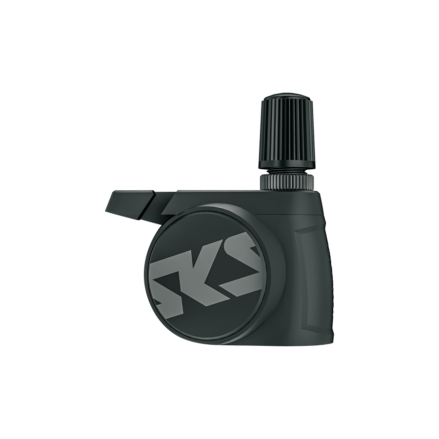
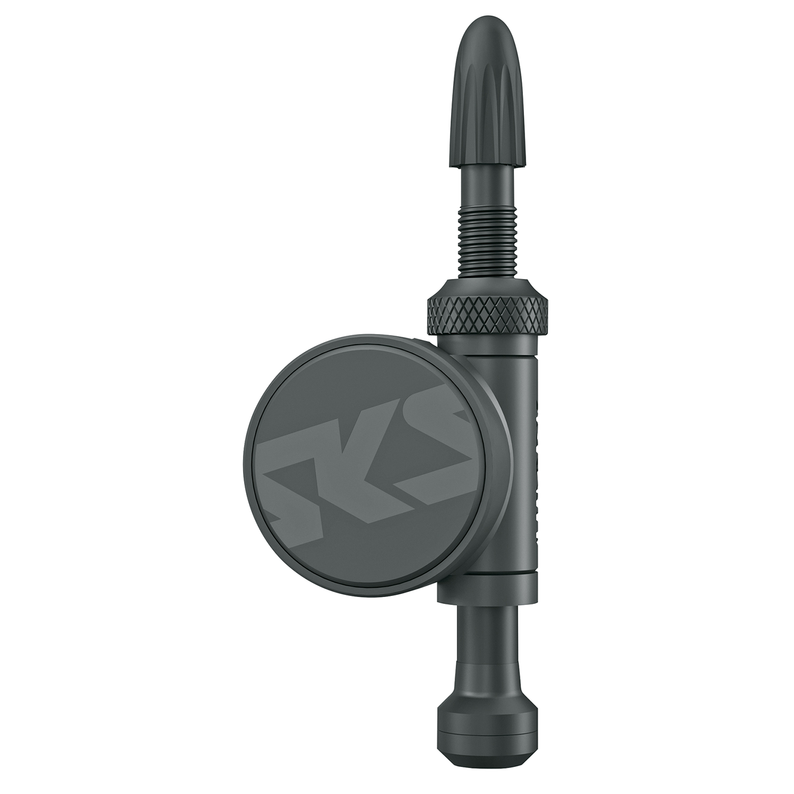

SKS AIRSPY on Garmin
Show SKS AIRSPY pressure on Garmin
TubeWitch for SKS AIRSPY is a separate Garmin Connect IQ data field for supported SKS AIRSPY ANT+ tire pressure sensors.
Enter the numeric sensor IDs and set low and high pressure targets in TubeWitch. See front and rear pressure, customize the display, and use popup, audible and vibration alerts on supported devices.
If the Garmin Store listing is not visible yet, Garmin approval may still be pending.

From AIRSPY sensors to Garmin data
TubeWitch receives AIRSPY ANT+ broadcasts using the numeric ID printed on each sensor. Enter each ID in the Front or Rear slot for that wheel and set its pressure targets in TubeWitch settings.
No pairing, bonding or sensor connection is required. Do not enter a Bluetooth address or BLE device name.
- Install TubeWitch for SKS AIRSPY and add it to a Garmin data screen.
- Enter the numeric sensor IDs, such as
21760. - Set the units and low/high targets for each wheel, save, and confirm live pressures.
SKS AIRSPY sensors
Use this version for SKS AIRSPY sensors with ANT+ support. Check the sensor model and use the matching valve setup.


Display, alerts and recording
- Front and rear pressure, or one enabled sensor.
- Separate low and high targets for each wheel in each Sensor Set.
- Popup, audible and vibration alerts on supported devices.
- Alarm delays, reset delays and additional repeats.
- Five named bike or wheelset profiles, Auto Switch and touchscreen controls.
- Flexible labels, colors, layouts and Garmin activity recording.
Garmin compatibility and release notes
Use the TubeWitch for SKS AIRSPY Garmin Store listing for the compatible-device list, current version and release notes.
If the Garmin Store listing is not visible yet, Garmin approval may still be pending.